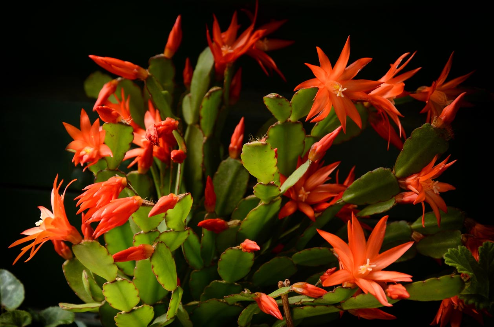
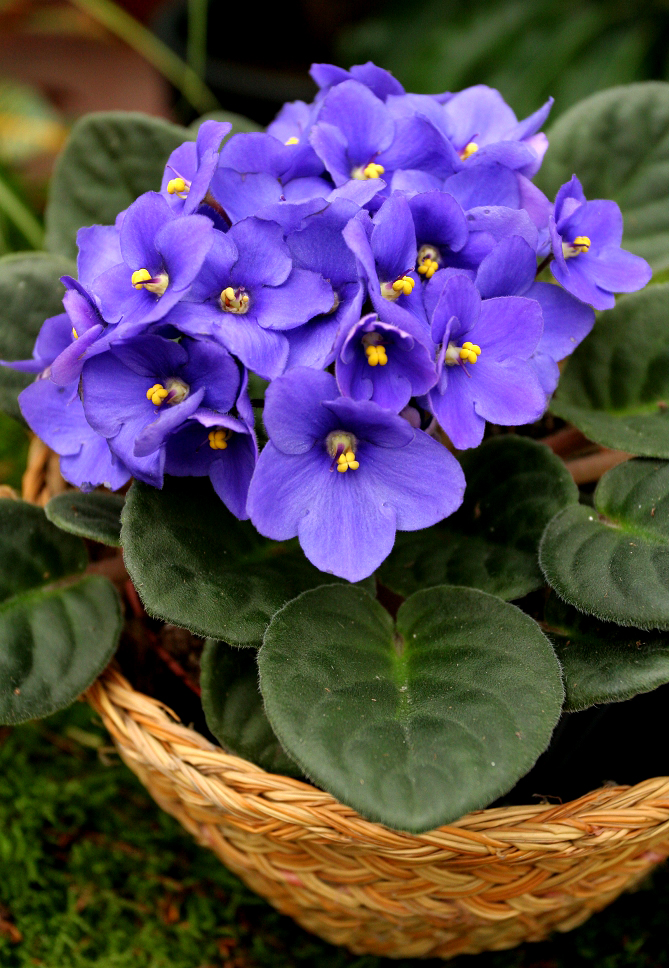
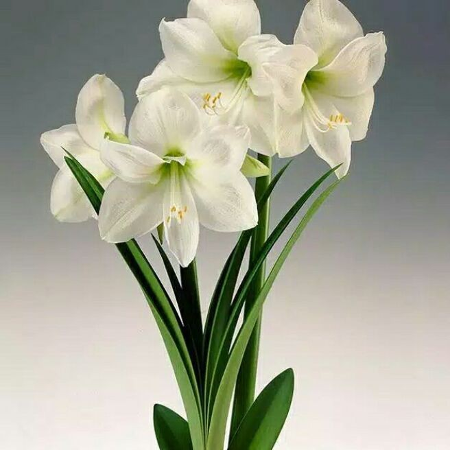

| Nom de la fleur
|
description |
image |
video |
|
cactus de Noël
|
- le cactus de Noël ne demandera qu'une température supérieure à 13° et un peu de lumière pour rester en forme.
- Après la floraison respectez une période de repos avec des arrosages très modérés.
|
 |
|
|
Saintpaulia |
- Il fleurit sans répit sur une très longue période pour peu qu'il soit exposé à une lumière assez vive.
- Une terre maintenue fraîche et quelques apports d'engrais lui suffiront amplement pour rester resplendissant de longs mois durant.
|

|
|
Amarlis |
- Plante au bulbe géant, elle peut être cultivée en vase spécial ou en pot.
- Sa hampe florale solide soutient des fleurs spectaculaires et colorées parfois même panachées.
- Une fois la floraison terminée laissez simplement sécher le feuillage et conservez le bulbe de l'amaryllis au sec jusqu’à l'automne suivant.
|

|